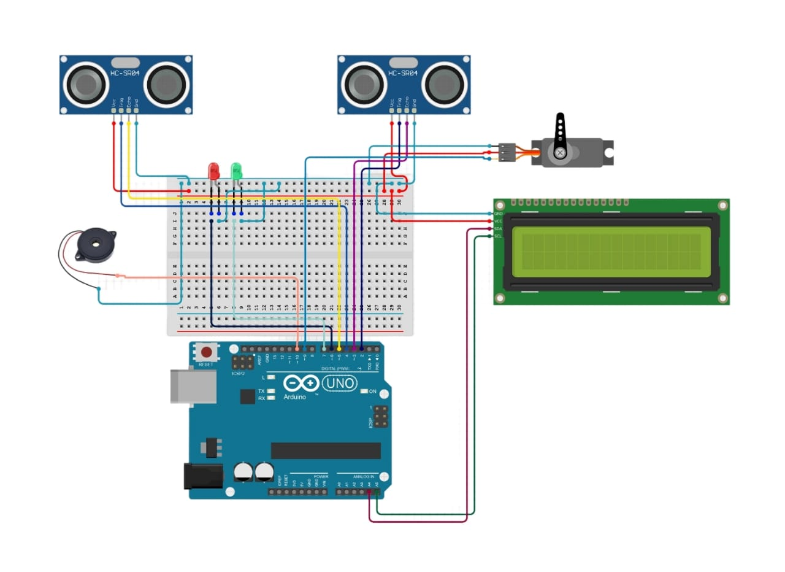

Introduction
This system detects overload on bridges to prevent accidents by using sensors and a servo-controlled gate mechanism. The system ensures the safety of vehicles and pedestrians by monitoring the load on the bridge in real-time.
Working Principle
Two ultrasonic sensors are placed at the entry and exit points of the bridge. These sensors detect the number of cars on the bridge. If the number of cars exceeds a predefined limit (e.g., 5 cars), the servo gate is activated to stop more cars from entering, and a buzzer sounds to alert the authorities. When cars leave the bridge, the system resets and allows new cars to enter.

Arduino Code
#include <Servo.h> #include <Wire.h> #include <LiquidCrystal_I2C.h> // Define pins for ultrasonic sensors const int trigPin1 = 9; const int echoPin1 = 10; const int trigPin2 = 11; const int echoPin2 = 12; // Define pin for servo const int servoPin = 6; // Define pin for buzzer const int buzzerPin = 7; // Create Servo object Servo myServo; // Create LCD object LiquidCrystal_I2C lcd(0x27, 16, 2); // Variables to store distance readings long duration1, distance1; long duration2, distance2; // Variables to count cars int carCount = 0; const int maxCars = 5; void setup() { // Initialize serial communication Serial.begin(9600); // Initialize pins pinMode(trigPin1, OUTPUT); pinMode(echoPin1, INPUT); pinMode(trigPin2, OUTPUT); pinMode(echoPin2, INPUT); pinMode(buzzerPin, OUTPUT); // Attach servo to pin myServo.attach(servoPin); // Initialize LCD lcd.begin(); lcd.backlight(); lcd.setCursor(0, 0); lcd.print("Bridge Overload"); lcd.setCursor(0, 1); lcd.print("Detection System"); // Set initial servo position myServo.write(0); delay(2000); lcd.clear(); } void loop() { // Measure distance from sensor 1 digitalWrite(trigPin1, LOW); delayMicroseconds(2); digitalWrite(trigPin1, HIGH); delayMicroseconds(10); digitalWrite(trigPin1, LOW); duration1 = pulseIn(echoPin1, HIGH); distance1 = duration1 * 0.034 / 2; // Measure distance from sensor 2 digitalWrite(trigPin2, LOW); delayMicroseconds(2); digitalWrite(trigPin2, HIGH); delayMicroseconds(10); digitalWrite(trigPin2, LOW); duration2 = pulseIn(echoPin2, HIGH); distance2 = duration2 * 0.034 / 2; // Check if a car is detected by sensor 1 if (distance1 < 20) { carCount++; delay(1000); // Debounce delay } // Check if a car is detected by sensor 2 if (distance2 < 20) { carCount--; delay(1000); // Debounce delay } // Update LCD with car count lcd.setCursor(0, 0); lcd.print("Cars on bridge:"); lcd.setCursor(0, 1); lcd.print(carCount); // Check if car count exceeds max limit if (carCount >= maxCars) { // Activate servo gate and buzzer myServo.write(90); // Close gate digitalWrite(buzzerPin, HIGH); // Turn on buzzer } else { // Deactivate servo gate and buzzer myServo.write(0); // Open gate digitalWrite(buzzerPin, LOW); // Turn off buzzer } // Add a small delay to avoid rapid updates delay(500); }
Components Used
- 2 x Ultrasonic Sensors
- 1 x I2C LCD Display
- 1 x Arduino UNO
- 1 x Servo
- 1 x Buzzer
- 1 x Power Supply
- Connecting Wires
Applications
- Bridge safety monitoring
- Preventing accidents due to overloading
- Traffic management solutions
- Real-time load monitoring
- Infrastructure safety enhancement
Future Enhancements
In the future, this system can be enhanced by integrating IoT capabilities to provide real-time data to a central monitoring system. Additionally, machine learning algorithms can be used to predict potential overload scenarios and take preventive actions automatically.